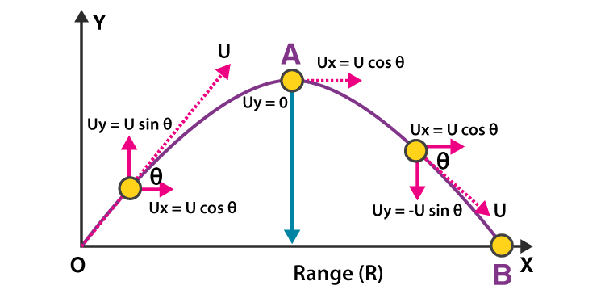
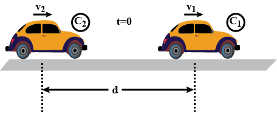
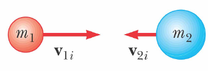
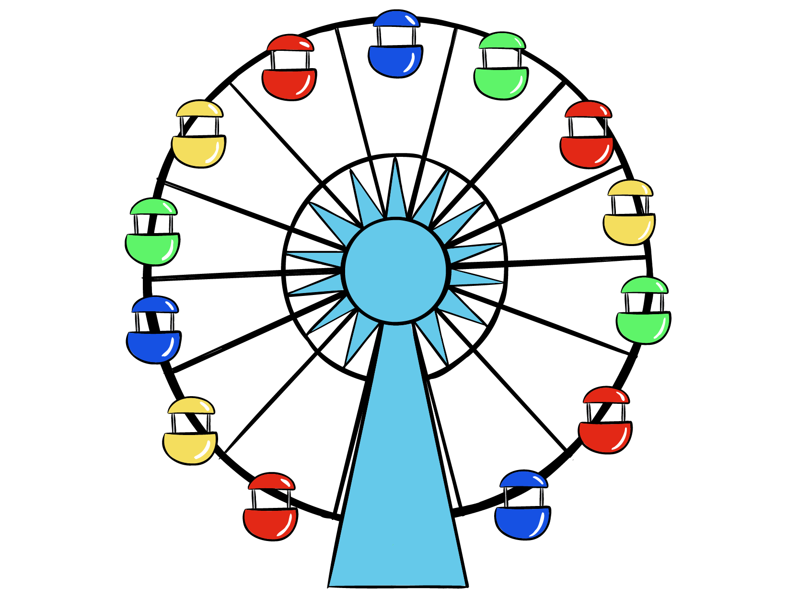
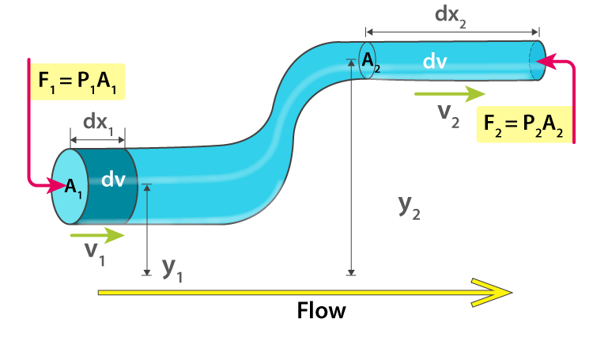

EduEvolve
Home
About Us
Contact Us
ANIMATED VIDEOS
1. PROJECTILE MOTION
a. Projectle motion
b. Projectle motion on an inclined plane
2. RELATIVE VELOCITY
a. Rain Man Concept
b. River Swimmer Concept
3. ENERY AND MOMENTUM
a. Head on collison vs Oblique collision
b. Elastic collision vs Inelastic colliion
4. ROTATIONAL MOTION
a. Pure Rolling Concept
b. Translatory vs Rotatory Motion
c. Circular vs Rotational motion
d. Comparison between moment of inertia of ring and disc
4. FLUID MECHANICS
a. Bernoulli's Theorem